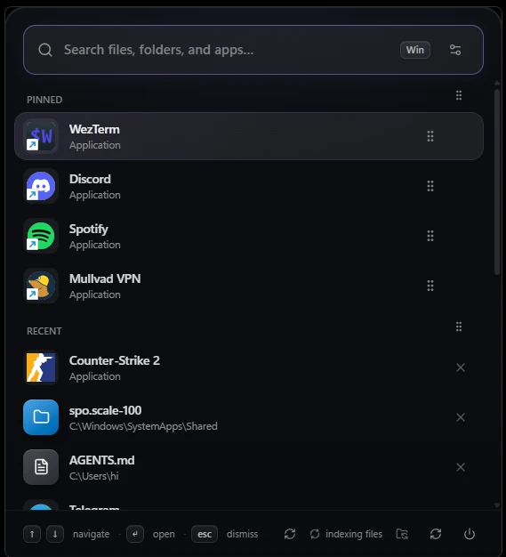
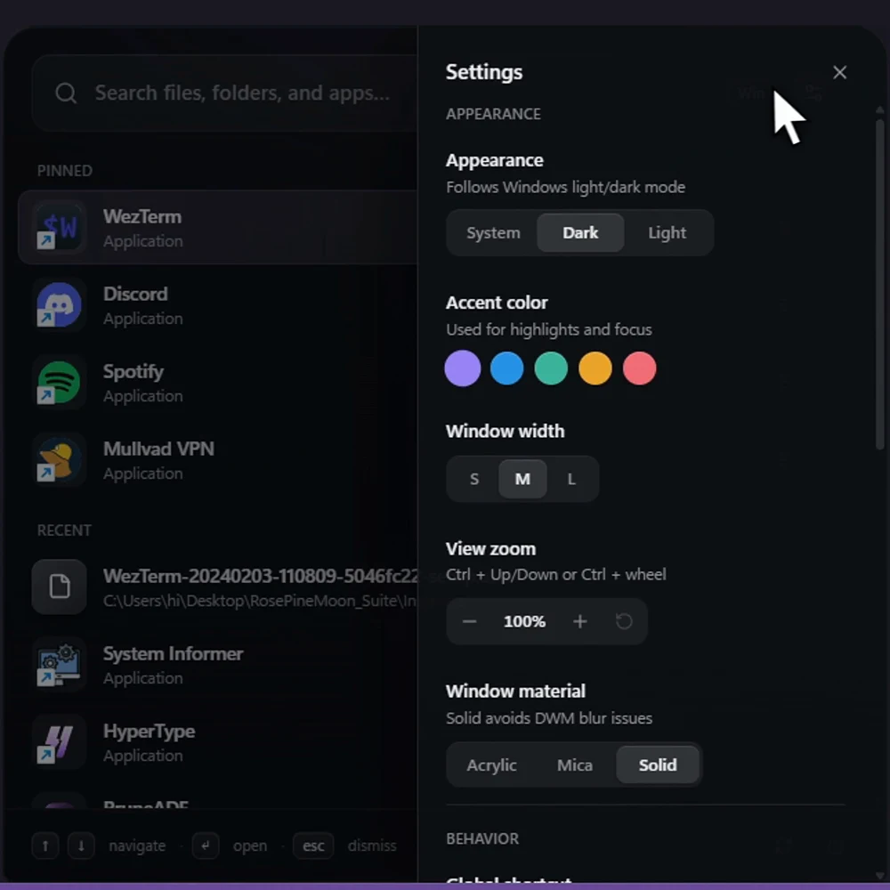
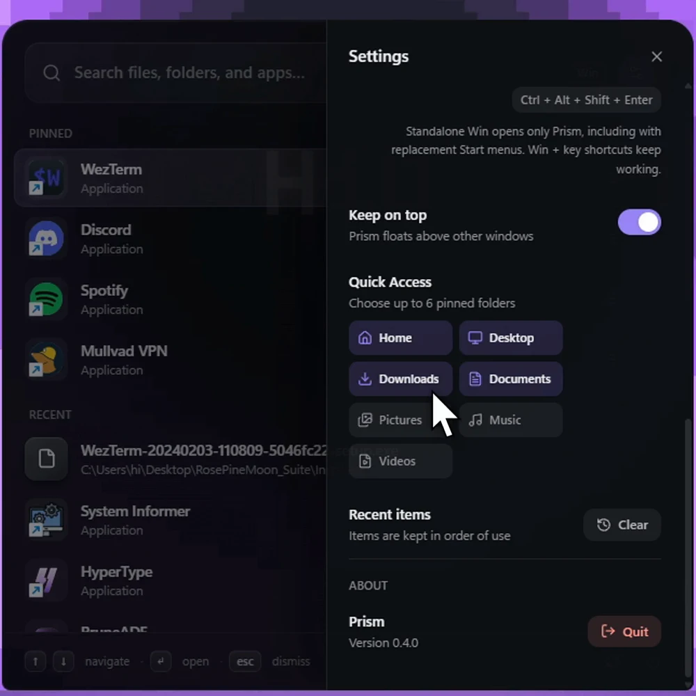

Move through Windows
Find. Open. Control.
Prism puts apps, files, folders, calculations, and taskbar controls in one keyboard-first launcher.
Windows 10 and 11 x64 MIT licensed
Winopens Prism from anywhere

Local searchApps, files, and folders
Keyboard firstOpen it from anywhere
Windows nativeNo StartAllBack required
Real product
See Prism at work.
No mockup. This is the application running on Windows.
Appearance
Looks native.
Feels personal.
Follow the Windows theme or choose light, dark, acrylic, mica, or solid. Adjust the accent, width, and zoom from Prism itself.
- Five accent colors
- Three window widths
- Adjustable view zoom


Quick access
Windows, within reach.
Pin frequent apps and up to six folders. Keep Prism above other windows, return to recent items, and move through the list without leaving the keyboard.
- Pinned apps and folders
- Recent item history
- Optional always on top
Capabilities
Less menu hunting.
Search
Installed apps, local files, folders, and direct paths.
Calculate
Evaluate an expression, then copy the result.
Launch
Open a result or run eligible local tools as administrator.
Shape the taskbar
Control alignment, density, grouping, auto-hide, and the Start icon.
Download
Put Windows
at your fingertips.
Windows 10 and 11, x64. Installs for the current user.